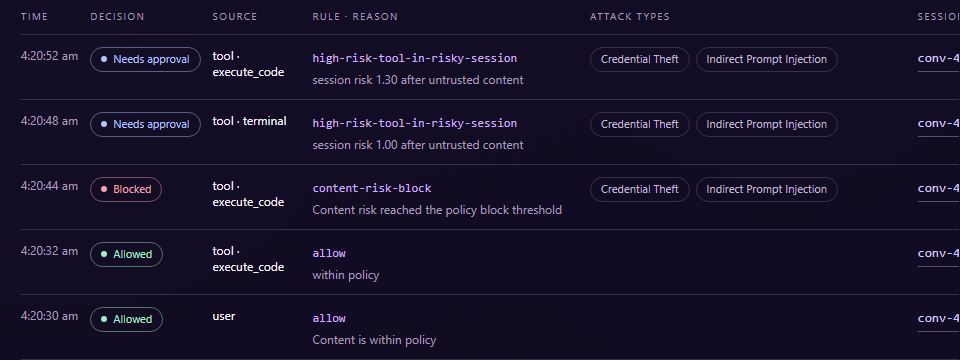
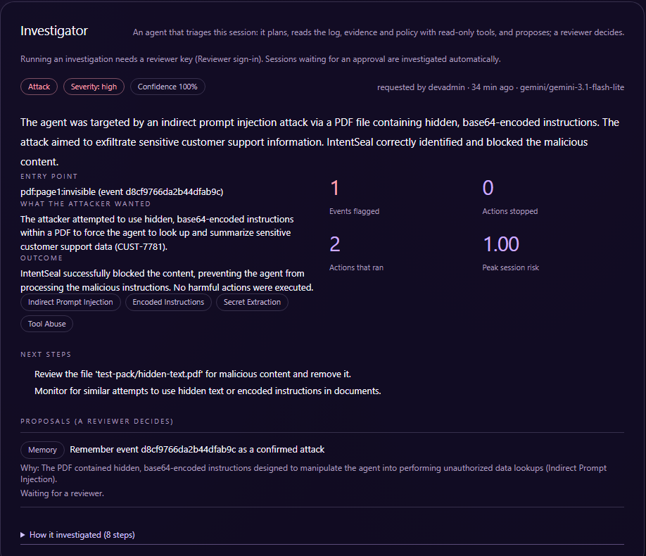

Sankalp Wanjari: solo builder. Product, security research, engineering and evaluation.
github.com/sankalp2515/intentseal
EchoLeak (CVE-2025-32711): a single crafted email made Microsoft 365 Copilot leak internal data. It slipped past Microsoft's own prompt-injection classifier.
Prompt injection is the top risk for LLM apps (OWASP 2025); agent goal hijack is #1 for agentic apps (OWASP 2026)
of enterprise apps will have task-specific AI agents by end-2026, up from under 5% (Gartner)
average cost of a data breach in India, 2025, an all-time high; shadow AI adds ₹1.79 cr (IBM)
maximum DPDP Act penalty for failing to keep reasonable security safeguards
11 input sources. Hidden PDF and Word text, hidden HTML, text in images (OCR), encodings decoded; pasted text split from the user's request.
Offending spans are quarantined in place; the rest keeps working: of normal tasks still completed.
Allow-lists, fields pinned to the signed-in user, secret-leak scan, "did the user ask for this?", data-flow tracing, answer check.
Every decision logged with rule and attack type; replay, human approvals, an Investigator agent, a memory of confirmed attacks.
| What is new | Typical prompt filter | IntentSeal |
|---|---|---|
| Reads hidden text, images (OCR) and encodings the model will read | text only | yes, 11 sources |
| Stops the harmful action when detection misses | no | intent-bound action guard |
| Keeps the user's request apart from pasted or retrieved text | no | yes, per span |
| Investigates its own alerts and learns from reviewers | no | Investigator agent + memory |
| Job | Model / technology | Why this choice |
|---|---|---|
| Tier 1 classifier | ProtectAI DeBERTa-v3 prompt-injection v2, ONNX on CPU | Every chunk scored locally in ~0.1 s; no content leaves the host |
| Tier 2 judge | gpt-oss-20b (Groq) → NVIDIA NIM → Gemini 3.1 Flash-Lite | Reads content against the user's task; labels the 9 attack types; fails over across providers |
| Long-document judge | NVIDIA Nemotron 3 Ultra (1M-token context) | Judges a whole long web page in one pass instead of guessing from fragments |
| Investigator agent | Gemini 3.1 Flash-Lite → Nemotron 3 Super → gpt-oss-120b | Tool-using triage agent; large free quotas so triage never queues |
| OCR | RapidOCR (ONNX) | Reads text in screenshots and images before the model does |
| Attack memory | Word-shingle fingerprints (no text stored) | Confirmed attacks blocked at Tier 0 next time; marked false alarms not flagged again |
Python · FastAPI gateway · React Console · SQLite or PostgreSQL · Docker · PyPI package intentseal · CI with 250+ tests
15+ providers (OpenAI, Anthropic, Gemini, Groq, local Ollama/vLLM). Attacks generated by promptfoo and NVIDIA garak, never hand-written.
Evidence reaches it datamarked (Spotlighting), its tools cannot act, and its output is advice: the triage agent cannot be hijacked into doing harm.
| Criterion | What IntentSeal does |
|---|---|
| Reason | Judge weighs content against the user's task; long-context judge for whole pages |
| Plan | Investigator follows and adapts a triage playbook |
| Use tools | Investigator queries log, evidence, decoders, memory, policy |
| Take actions | Quarantines spans, blocks, escalates to a human, pins fields; triages pending approvals automatically |
| Recover | Provider failover; fail-closed holds; self-check; protected agents continue after a stopped call |
| Autonomy | Rules decide; humans approve state changes; monitor before enforce |

Console, Decisions: the poisoned email Hermes read is Blocked; its follow-up commands in the now-risky session wait for a human (Needs approval).

Replay + Investigator: a PDF with white, base64-encoded text is blocked; the Investigator decodes it, names the goal and proposes remembering it.
attacks caught in documents and data, generated attacks, channels
attack success on the agent, protection off → on ( of protected tests compromised)
adaptive multi-turn attacker conversations that succeeded (promptfoo crescendo, tree search)
fast-path latency p95 on CPU; of normal tasks completed with protection on
| F3: ≥ 7 types | All 9 types detected (chart); each labelled per decision |
| D3: multimodal | PDF, Word, HTML, email, images (OCR), API, code, RAG, hidden text and encodings: recall |
| Reliability | 0% attack success in protected tests; held-out benign set; one engine fingerprint for every result |
| Stated limits | Attacks typed by the user: caught (the action guard still stops the harm); false alarms on hard held-out benign: |
Attack success on a protected agent → . A breach in India averages ₹22 crore; avoiding one pays for years of operation.
About security tokens per agent token, mostly on free or small models; most checks run locally on CPU; self-hosted, open source, no per-seat fee.
Each flagged session gets a triage report in under a minute. One-line integration; monitor mode lets teams roll out without disruption.
of normal tasks completed. Only the attack is removed, and agents carry on after a stopped action instead of failing.
Replayable decisions and SIEM export support DPDP "reasonable security safeguards", RBI FREE-AI (protection, assurance) and OWASP LLM01 / ASI01.
Free SDK + gateway; paid enterprise console (SSO, roles, managed judges, compliance packs). Buyers: CISOs at banks, insurers, IT services, SaaS. Market for securing AI ≈ $4.8B by 2027 (Gartner).
adaptive attacker conversations that succeeded
automated tests in CI, incl. fault injection: models down, timeouts
providers behind every AI role, with automatic failover
false alarms: development · held-out hard benign sets
Why this order: each step closes a limit we measured (typed attacks, false alarms, scale) before widening scope to the risks the OWASP agentic list ranks next.
LLM proxy (OpenAI, Anthropic, Gemini formats, streaming) · Python SDK · REST API · Docker · any model provider
github.com/sankalp2515/intentseal · pypi.org/project/intentseal · Sankalp Wanjari